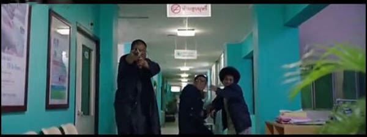

“对于摄影师来说，难度不一定是处理某一个复杂难搞的环节，而是能不能抓住每一场戏的核心，把握住整部片子调子和味道”。我问拍什么戏最能考验摄影师的功力，杜杰老师如上回答我。在国内的摄影师里，我个人非常喜欢杜杰老师，每次接触他，都会感觉到他对电影、对摄影的态度。专访摄影师杜杰，从《唐人街探案》的影像风格确立的过程，到面对终极处境的解决方法，通过《唐人街探案》每段的拍摄，面面解读，还原拍摄过程。
电影《唐人街探案》讲述了天赋异禀的结巴少年秦风（刘昊然 饰）警校落榜，被姥姥遣送泰国找远房表舅——号称“唐人街第一神探”，实则“猥琐”大叔的唐仁（王宝强 饰）散心。不想一夜花天酒地后，唐仁沦为离奇凶案嫌疑人，不得不和秦风亡命天涯……在短短七天内，完成找到失落的黄金、查明真凶、为自己洗清罪名这些逆天的任务。
电影摄影师杜杰
杜杰，电影摄影师。电影作品有《绿草地》、《无人区》、《疯狂的石头》、《边境风云》、《转山》、《唐人街探案》《罗曼蒂克消亡史》….等。
陈思诚导演之前在视觉风格上想让这个片子能给人比较强烈的风格一种感觉，类似于《疯狂的石头》那种强度。但是对于我个人来说，虽然之前拍过很强烈风格的片子，但是我现在觉得也许不应该这么拍，摄影师的角色也许应该适当的往后退一点，过去有时候是为了摆一个角度而摆一个角度，或者是为了玩花招而玩一个花招，我现在没有这么强的一种冲动去做这样的事情，我觉得把握住整个片子的味道更重要，故事、表演、美术、摄影大家相互去配合，让整个都流畅起来。所以对于这个电影我也觉得也许不用那么去强调风格这些东西，其实拍完这个片子以后，现在回想起来，我觉得我有一点保守，也许这个电影可以做的更有风格一点。
陈思诚导演他是一个很有剪辑意识的导演，在写剧本的时候就很有节奏感，怎么剪、怎么拍他是有一套自己的想法。针对剧本我们有了初步的交流以后，剧组在开拍前开了一些会，讨论一些剧情的拍摄方案，比如说主人公回忆的那些段落怎么去拍，这些会议除了讨论特效部分之外，都是一种比较务虚的交流。因为这个故事导演并不想让这个电影做成一个很黑的、纯悬疑和侦探的的片子，希望还是要悦目、清爽一点，给人的压力没有那么大，所以我们尽量选择一些带有丰富色彩的环境。在一些色彩相对单一的场景增加一些有颜色的光。整体处理的稍微亮一点，虽然很多场景看起来好像是自然光，但是其实很多都是打过光的，只是处理光的方式不像常规的处理，更多的用有颜色的光去做，也有很多时候是利用城市里本身有的一些光源，像管灯、小的射灯做一些点缀，让环境显得不是太暗、太阴郁。
针对剧本开拍前导演还专门找人画了整部戏的分镜头,我也把剧本里有感觉的场景做了一点分镜，以供他参考。虽然我们拍摄时并没有完全按照分镜剧本来拍，但对整个摄制组的帮助其实非常大。大家都知道每天的工作量，以及基本的节奏。导演把每场戏大概怎么拍其实都过了一遍脑，虽然到了现场的时候条件大多都不一样了，但因为有了这一步的工作，我和导演就很默契了，他可以专注于表演，我也可以有创造性的发挥。所以拍摄的过程很愉快也很有效率。另外的一个保障是我们也有一个现场剪辑，拍完以后现场就把片子给剪了，可以立马看到效果，所以我觉得这个过程是一个很自然而然就到了现在电影的效果的过程。关于风格分寸的把握，其实我还在摸索，也许这次拍的方式相对来说比较保险，风格也比较弱化，这是我个人的感受，也不是说对或者错，每个片子拍完总会有各种遗憾和困惑，但是片子拍完最终的面貌基本上也就无法改变了。只能尽量在下一个片子里尽量做好准备。但也总会遇到新的问题。我拍《罗曼蒂克消亡史》的时候完全是另外一种拍法，每个片子的调调和导演的意图都不一样，所以想做什么样的戏和出来什么样的东西，由很多因素决定，每个电影都是有每个电影的命的。
这个戏本身是有一定的压力的，无论是时间上还是预算上对于跨国拍摄都不是很宽裕，这样的情况也导致筹备期不能够有很长的时间。并且我们这次在泰国拍摄要经常应付各种各样的限制，比如像酒吧，只能有固定的几个可以挑选，并且只能在固定的时间段拍摄，今天如果没拍完，只能等下次再来，并且拍摄街道的时候，给到的拍摄距离都是固定的，不可以超出这个距离。多增加一个灯都需要申请，还有我们看好的一些场景，因为很多其他原因，在开拍前一天就突然不能用了，只能被迫换景，然后换景之后就会产生一些新的变化…等等。然后这个电影的场景又非常多，主要的场景是根据实景做了一些改造，这样的话协调的事情就会非常多，都是需要去克服的各种问题，我觉得美术师李淼能在如此条件下完成场景的设置很了不起。这里还有很多时候经常会遇到因祸得福情况发生，所以整体来说我们还是很幸运的。
酒吧醉酒戏的拍摄
拍酒吧这个段落的时候，导演先带我们去看过一次景，外联制片带我们去整个酒吧街上我们能够谈下来拍摄的地方都看一下，同时也会提出具体的限制，看场地的时候我拿手机像游客一样简单的拍一下，找找导演说的那种状态，这样看完之后就会有一个基本的拍摄方案。我们最后选用的这个酒吧墙上四周有很多镜子，拍镜子的时候就有很多问题，摄影机只要对着镜子拍，必然会在镜子里面穿帮，但是这个酒吧整体效果是我们能用的几家里面最合适的，所以我们要克服的怎么把镜子里面的摄影机给避掉的问题。还有一个问题是这个酒吧几乎全部都是纯蓝色的光，怎么打灯可以不穿帮也是一个问题。 这里我们其实做了一面大的镜子，镜子中间只留了一个镜头的孔，把摄影机藏在镜子后面，通过这个孔去拍，这样在对面的镜子里观众只能看到一个小黑点，加上酒吧环境十分嘈杂，所以观众也不会太在意这个镜头。因为酒吧本身是是以蓝色为主，还有一点粉色、红色的一些光，为了让人的肤色以及环境多一些变化，我们在桌子边缘不穿帮的位置上加了一些暖色调的管灯，造成一些有颜色的反差。
拍大腿那个镜头是用了一个滑板，把摄影机绑在滑板上面，因为舞女后面也会有镜子，为了防止穿帮，我们就拿一个细长的杆子后面一点一点推过去，当镜头里边出现了一些比较迷幻的效果的时候，我们用了lensbaby的一款镜头，我们也曾想过再增加几个移轴镜头来丰富效果，但当时租赁公司也没有，单独从国内租借也挺贵的，所以我们就只用了一套那样的镜头表现一种比较迷幻的效果。
这场戏还做了一个装置，就是把摄影机固定在人身上，演员跟摄影机一直保持相对不动的角度，跟着演员身体的移动而移动，让周围的环境变化，其实这样的镜头里面别的电影里也用过，像我拍的《转山》《两杆大烟枪》等等。另外，这组镜头组还涉及到关于床的一个特技镜头，这里是实拍和特效相结合的，床是我们做的一个蓝色的灯箱，从画面里面看其实就是一块蓝布，那个蓝布是自发光的，而不是被打上光，这样就不会有多余的灯出现在画内，也不会有打到群众演员身上的光，后期也可以抠掉蓝布前面的人，然后把床合到这个背景里面去。这一段涉及到的环节是比较多的，我们也是在前期从拍摄上尽量的规避一些东西，但是其实也都是一些花招。
第一场动作戏的拍摄
因为唐人街很多地方我们是拍不了的，所以这场戏至少是六七个场景拼在一起的。有很多商贩的场景我们做了一个偷拍的设备，把设备隐藏到一个小商贩的车里，当我们需要一些高角度的时候，用了一个很高的摇腿，而没有选择用炮，这里的条件不允许用炮，这样可以升到大概有5、6米的高度，再在上面加一个遥控头，这样就可以操控了。然后我们也会藏一些摄影机在某些店铺里面抓拍，这是在很多人的场景里面偷拍使用的拍法。涉及到那场昊然用可乐瓶子打陈赫那段，其实是封了一条街，这里需要设置一些威亚，还要布置一些商贩的东西可以被推倒，这段也是所有部门在一起把这些东西做到现在的一个效果，大家尽量让重拍的次数少一点，并且看上去更激烈一点。后面的菜市场完全是我们搭出来的，这个地方我们道具老师做了一个很厉害的装置，拉一根绳子棚子就全部倒掉，达到现场电影看到的效果。大场面动作戏其实很有难度，每个在镜头里出现的人都要会动作还要会表演，我们的动作指导伍刚老师在这方面也非常有经验，他带领的团队也非常好。其实中间拍了很多很好的动作镜头，但是因为受篇幅的限制都被缩短了。
医院混战戏的拍摄

医院混战那场戏其实导演很早以前就想这么去拍，我拍的《疯狂的赛车》也已经用过，从专业的角度来说并没有什么拍摄难度，但是因为用的比较恰当，所以观众看起来可能觉得比较嗨。这段戏其实原来是想在棚里拍的，因为棚里可以炸，但是后来因为预算的问题，还有是因为需要在这个医院要拍很多场戏，所以还是找了一个废弃的医院。这个拍摄场景不好的地方就是走廊有点短，然后中间有柱子，下面还有一个水泥台阶，但是后来也没有更好的地让我们去拍，所以选了这里。我们把一个走廊的一个门做了一个电梯。剧本里这场戏是在一个全黑的环境下发生的，最开始我们也想过利用爆炸瞬间产生的火光看到每个人的状态，但是这样其实就变成了一个个定格的画面，光瞬间亮了是一个定格，一灭其实是全黑了什么也看不见，就缺少了整个流动的效果，展现不了每个人的状态，所以后来就做成了有一个基本的密度光，这个密度能看清楚每个人的大概的形态，灯光师王春枝和道具共同做了十几个有火光效果的枪。火光的效果其实是在枪前面加了一个灯，灯的开关和枪的扳机相连，以此来模仿演员开枪的一瞬间的火光，然后就变成了这里面十几把枪，每个枪都在打，后期特效再把灯泡换成火光的那种，就显得这个环境更生动一点。拍的时候摄影机升格到96。
刘昊然回忆段落，时间静止的拍摄
特效和实拍结合做的。这些戏是我们开拍之前的会议讨论过怎么去实现这些效果，需要各个部门怎么配合、怎么拍等等。比如说动作导演这块都要对整个过程进行动作设计，人怎么动，怎么去打，怎么给摄影机留位置，摄影这块我们是用STEDICAM模仿一个人的主观，然后还有后期做CG的时候，除了把不该出现的东西擦掉以外，还做了一些空中飞洒的纸，这样显得场景更真实一些。这些方式的实现方法并不是多新鲜的一个方式，只是放在那儿比较合适。也都是几个部门互相的配合来达到这种效果。
对于演员的拍摄镜头设计
因为毕竟两个人的表演方式都是不一样的，一个就是很夸张、很风格化的表演，所以我们有时候选的一些角度或者拍摄方式都是要夸张一些，来加强这种效果，那个小男孩刘昊然其实相对来说处于一个比较冷静的状态，所以拍法确实不太一样。在拍宝强的时候镜头感要稍微广一点，角度上也许会有一些比较仰或者比较夸张的一种感受。因为小男生是这个片子颜值的担当，所以更多的时候是把他帅一点的那一面去展现出来。这其实也跟演员的调度有关系，很多时候宝强是出现在前面的，破案的时候一般都是宝强在前面说“怎么样怎么样”，昊然在后面站着远远的看，所以产生这种感受本身在调度上也有关系，就是让两个人在节奏上产生一点喜感和反差的方式。
所有的规则都不是一成不变的，看到监视器里面的画面，你觉得这个感觉是对，它可能就是对的，他能符合这个人物，那这个拍法就是对的，如果非要把宝强从变帅的这个角度拍的话，那感觉可能就不对了。影片的气场这个东西是大家共同营造的，摄影师如果没有把他们展现出来，电影的调调可能就不太对了。比如说拍思诺小姑娘的时候，可能就要去想这个时候应该怎么拍，光怎么去布置，什么样的角度能产生善和恶一体的效果，尽量的让这个视点不要太明显，但是也不是说就随便拍了。
关于电影调色的想法
因为我们的目的比较明确，就是想要看完感觉到赏心悦目、很舒服的颜色，拍的时候我们有一些颜色的处理，有的时候是在灯上加一些有颜色的纸，因为泰国本身的颜色就是很丰富、绚丽，我们看到的东西就已经很好看了，所以现场基本上是根据监视器给我们的感觉来去做一些调整，加一些什么颜的纸，怎么去处理光线。最早的时候我们自己也做了一些LUT，但后来都觉得真实的感受更好，结果又用回了最早的Rec. 709。后期也是在那个画面基础上做一些调整。整体更亮更悦目一些，其实并没有往风格上去做。
考验一个摄影功力的，是拍摄什么？

我觉得难的不是说某一个具体的棘手的环节，想达到一个完美的情况，其实需要很多因素凑在一起才能达到完美的效果。比如说美术的陈设很好、演员的状态很好，连天气和氛围都达到了“状态”。很多因素才能造成一个电影或场景成为经典，这不是仅仅一个摄影部门所能做到的。对于摄影来说，我觉得比较难的是要抓住整部电影以及每一场戏的核心和氛围，每场戏都有很多种可能，其实没有一种绝对的东西，但是作为摄影师必须要抓到很准确的分寸。还有就是作为摄影师要把握住整个片子的一种调子和味道。就是整个片子拍出来的时候，中间不可以有很多跳出来的怪音去干扰观众，整个片子必须是一个很整体的感受。逆光打的很漂亮、演员打光打的很漂亮、某些场景怎么拍，这些只是小技巧，片子整体的感受是最难抓到的，它不是一场戏的问题，是一个片子所有的环节和因素结合在一起的。拿现在的眼光去看《教父》，摄影没有什么小花招，肩扛、滤镜、航拍…都没有，也没有复杂的摄影机运动，电影里的布光好像现在很多人都会用，构图好像也没有很特别，但是《教父》之所以是一个经典，是因为观众看的时候被一个氛围完全笼罩住了，每一个部门的分寸都很到位，摄影、演员、音乐、场景、故事，没有一个部门跳出来，它是浑然一体的。但凡经典的作品都是这样的感觉，这个是需要很多的部门一块来达到这样的效果，不是某一个部门的功劳。
分享到金象动态